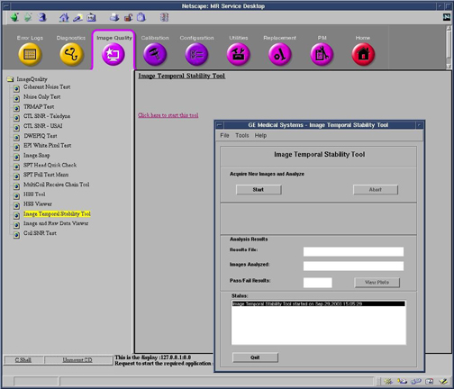
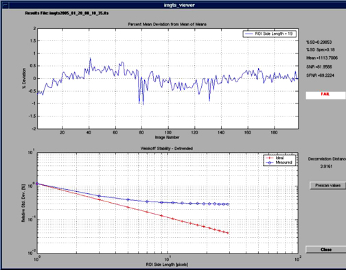
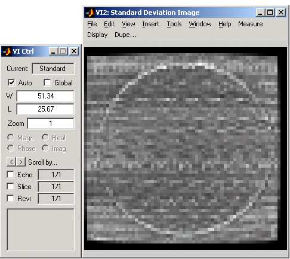
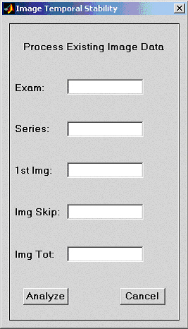
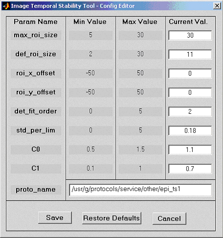

GE Exclusive Use Only
Direction 5670000, Rev# 1
Optima MR450w 1.5T Service Methods
Module Version 5.0, Version Date 6/3/09
GE Exclusive Use Only |
| Required Persons | Preliminary Reqs | Procedure | Finalization |
|---|---|---|---|
| 1 | 5 mins. | 5 mins. | Not Applicable |
This procedure measures the mean consistency of images over time, using an fMRI protocol to generate heat within the system. The fMRI option is required for this test.
| Item | Qty | Effectivity | Part# | Manufacturer | |
|---|---|---|---|---|---|
| Head TLT Sphere (for 1.5T) | 1 | - | 46-265826G6 | - | |
| Head Loader Shell (for 1.5T) | 1 | - | 46-287899G1 | - | |
| Head TLT Sphere (for 3.0T) | 1 | - | 2359877 | - | |
| Head Loader (for 3.0T) | 1 | - | 2360031 | - | |
| Head Loader Positioner | 1 | - | 5110241 | - | |
| ||||
| POISON HAZARD! | ||||
| 1.0T and 1.5T Phantoms CONTAIN NICKEL, A SUSPECT CARCINOGEN. | ||||
| DO NOT INGEST. DISPOSE OF AS A HAZARDOUS WASTE ACCORDING TO STATE AND FEDERAL REGULATIONS. |
| ||||
| POISON HAZARD! | ||||
| 3.0T Phantoms CONTAIN Silicon Oil. | ||||
| DO NOT INGEST. DISPOSE OF AS A HAZARDOUS WASTE ACCORDING TO STATE AND FEDERAL REGULATIONS. |
Place the head TLT sphere with loader into the center of the head coil as shown in Illustration 1.
| NOTE: | 3.0T phantoms are pink. 1.5T phantoms are light green. |
Illustration 1: Head TLT/Loader in Lightweight Head Coil

Landmark and Advance to Scan.
From the Common Service Desktop or Service Desktop Manager, Image Quality tab, start the [Image Temporal Stability Tool]. (See Illustration 2.)
Illustration 2: Starting Temporal Stability Tool

Refer to Illustration 2. Press the [Start] button under the Acquire New Images and Analyze section of the Image Temporal Stability Tool GUI. To abort the test, press the [Abort] button to stop the scan and subsequent analysis. (This button becomes active when the scan starts.
The default fMRI protocol will be scanned and analyzed. The Status window at the bottom of the GUI will update with the current operation.
Upon completion of the analysis and if no other results file was opened, the Analysis Results section of the GUI will be filled in. The overall Pass/Fail results will indicate a PASS if all measurement criteria pass specifications.
When Expert mode is turned off, pressing the [View Plots] button will display the Plot Viewer window shown in Illustration 3.
The top plot is the percent deviation of the mean of an 11 x 11 pixel ROI of each image from the mean value of all ROI means from all images.
The measured percent relative standard deviation (%SD) along with the %SD Spec is displayed. If the %SD is less than or equal to %SD Spec, the PASS/FAIL indicator to the right of the plot indicates a PASS condition.
Illustration 3: Plot Viewer in Non-Expert Mode

The lower plot in the Plot Viewer window is by default the measured Detrended Weisskoff Stability plot along with the ideal response and an Upper Spec response plot. (If the Measured Weisskoff Stability is less than the Upper Spec plot for every point, then the PASS/FAIL indicator to the right of the plot indicates a PASS condition.)
When Expert mode is turned on, the [View Plots] button will bring up the Plot Viewer window shown in Illustration 4.
| NOTE: | The default top and bottom plots are initially the same data as in Non-Expert mode, but there are now additional controls available on the Plot Viewer window to allow for more information display. |
Illustration 4: Plot Viewer in Expert Mode
The ROI Side pull-down allows selection of one of the ROI sizes used in the measurement and will display the % Mean Deviation or just the Mean values in the top plot dependent on the Plot Type selection.
The Detrend checkbox will allow the user to look at the % Mean Deviation or Means (dependent on the Plot Type selection) and the Weisskoff Stability plot with Detrending turned on or off.
The Plot Type pull-down box allows for display of either % Mean Deviation or just Means of the selected ROI side length in the top plot.
The [STD Image] button will use the View Image tool to display the per pixel Standard Deviation Image shown in Illustration 5.
Illustration 5: View Image of Standard Deviation Image

Any set of time series images acquired can be analyzed with any protocol by selecting the [Select Images] button under the Analyze Images in Database section. Must be in Expert mode to view this option. The images must be a circular cross section of a phantom (either spherical or cylindrical).
After selecting the [Select Images] button, the images input GUI shown in Illustration 6 displays. Enter the Exam number, Series number, First Image in the time series, number of images to skip (if the series contains more than one slice and was acquired in Interleaved mode), and the total number of images to analyze. Press the [Analyze] button to perform the temporal stability analysis on the images.
Illustration 6: Process Existing Images Input

The Image Temporal Stability Tool config file can have the default operating parameters edited via the Config File Editor. Must be in Expert mode to access this feature. After selecting Edit Cfg File under the File menu option, the Config File Editor interface shown in Illustration 7 displays.
Illustration 7: Image Temporal Stability Tool – Config Editor

All default parameters can be edited within the valid ranges specified. The default protocol file used for the automated scanning and analysis can also be changed.
A [Restore Defaults] button will automatically restore all default values for all parameters.
All Parameter names have a tool tip text box that explains the use of the parameter if the cursor is positioned over the Param Name field.
No finalization steps.